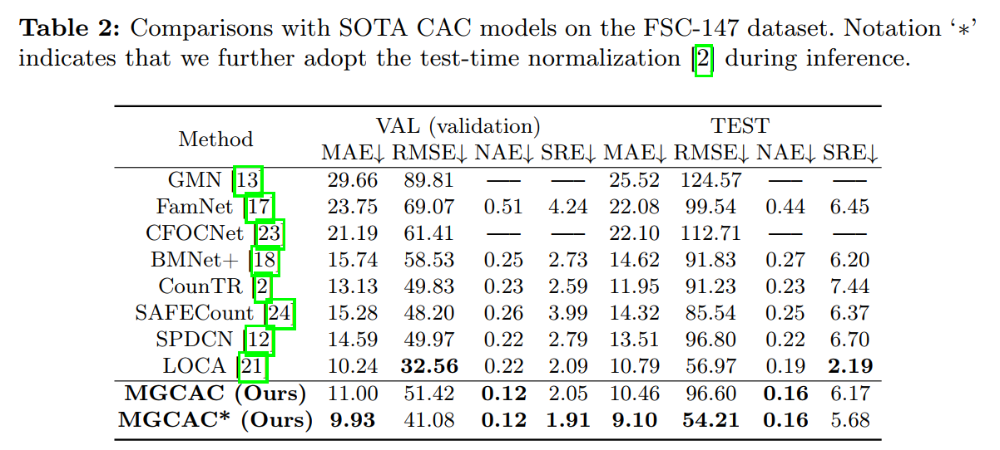
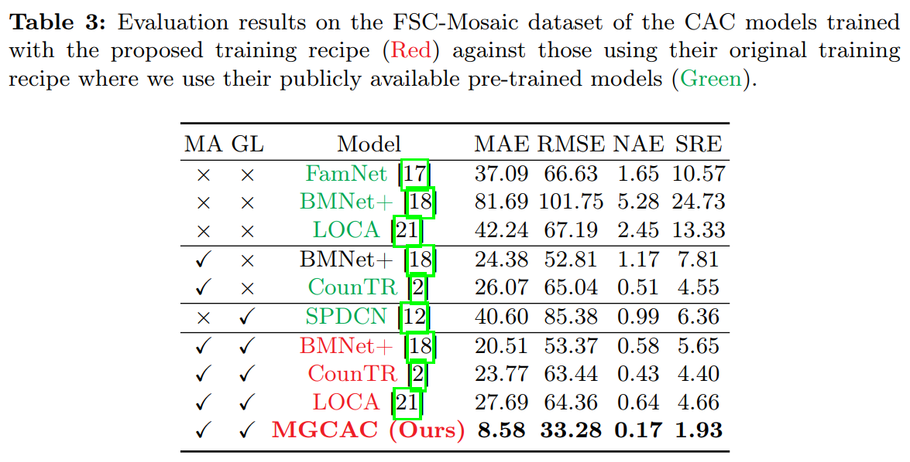
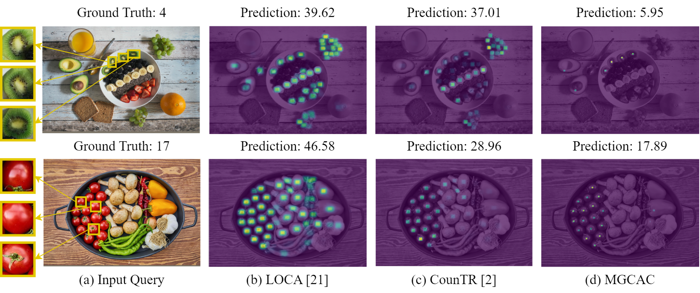

Class agnostic counting (CAC) is a vision task that can be used to count the total occurrence number of any given reference objects in the query image. The task is usually formulated as a density map estimation problem through similarity computation among a few image samples of the reference object and the query image.
In this paper, we point out a severe issue of the existing CAC framework: Given a multi-class setting, models don’t consider reference images and instead blindly match all dominant objects in the query image. Moreover, the current evaluation metrics and dataset cannot be used to faithfully assess the model’s generalization performance and robustness.
To this end, we discover that the combination of mosaic augmentation with generalized loss is essential for addressing the aforementioned issue of CAC models to count objects of majority (i.e. dominant objects) regardless of the references. Furthermore, we introduce a new evaluation protocol and metrics for resolving the problem behind the existing CAC evaluation scheme and better benchmarking CAC models in a more fair manner. Besides, extensive evaluation results demonstrate that our proposed recipe can consistently improve the performance of different CAC models.



@article{chou2024recipe,
author = {Chou, Tsung-Han and Wang, Brian and Chiu, Wei-Chen and Chen, Jun-Cheng},
title = {A Recipe for CAC: Mosaic-based Generalized Loss for Improved Class-Agnostic Counting},
booktitle = {ACCV},
year = {2024},
}